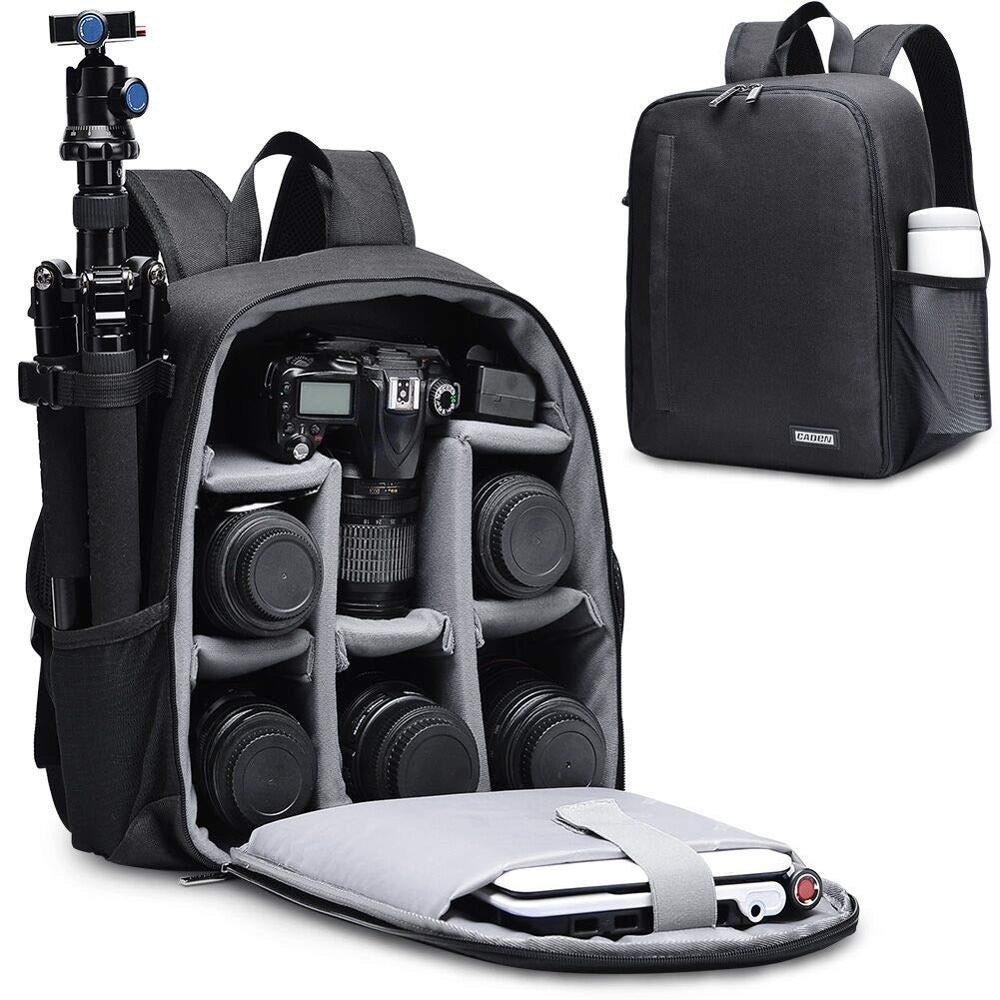
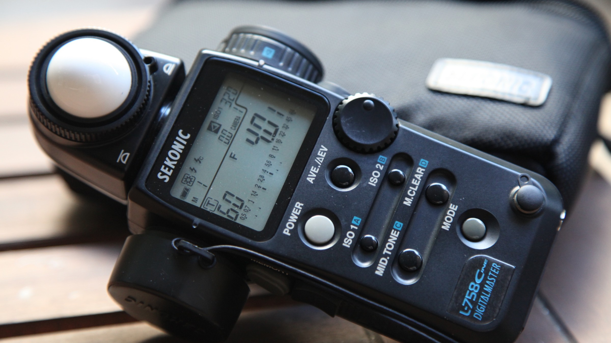
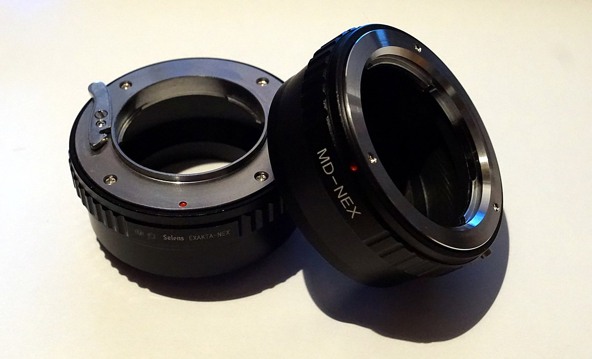

Basic Gears in Photography
Other Gears
Gear is and always has been a limiting factor that places a ceiling on the abilities of what a photographer can achieve. The better your gear, the higher that ceiling.

Camera Bag
As a working photographer, the center of the universe is your camera bag and its contents. Camera bag gives you protection. The protection of your expensive gear comes first when you travel. A camera bag must not only look good and fit nicely around your shoulders, but it should also give easy access to the camera and protect it.

Light Meters
For ambient light readings, the meter in your camera can be quite sufficient. Flash metering is another story, especially if you are using flash to fill backlit subjects or darken background areas to place more emphasis on the subjects in the foreground. You can always shoot test exposures and review them on your camera’s LCD, but a more professional and certainly more precise method of establishing accurate flash exposures is by using a light meter.

Lens Adapter
A lens adapter is a device that enables the use of camera and lens combinations from otherwise incompatible systems. The most simple lens adapter designs, passive lens adapters provide a secure physical connection between the camera and the lens.